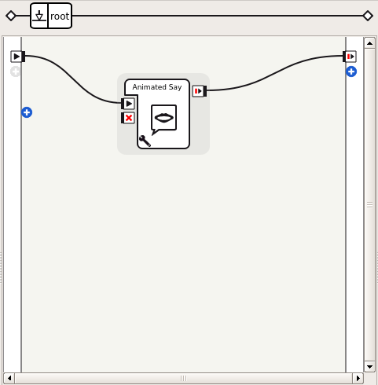

Creating an Application from scratch¶
This tutorial will show you how to create a simple Application based on an interactive Activity which recalls the owner of the robot.
It uses Trigger sentences and some Dialogs to set the name of the owner.
The tutorial will bring you step by step to a real application that you might publish on Aldebaran Application Store.
Step 1: Create a dummy interactive activity¶
It is the first thing to create, in order to be able to test the application. As a first iteration, the robot will not recall the actual name of the owner, but instead will just say “Hello”.
| Step | Action |
|---|---|
| Create a new Project and save it as “Tell my owner” wherever you like. | |
| Look for the Animated Say box from the Box Library using the search and drag’n’drop it to your diagram. | |
Connect its input to the main input of the diagram and its output to the main output of the diagram, as illustrated below:  |
|
Click the  Play button to test the behavior. The robot
should say “Hello”. If you are working on a virtual robot, you can see in
the Robot View a speech bubble with “Hello” written in it. Play button to test the behavior. The robot
should say “Hello”. If you are working on a virtual robot, you can see in
the Robot View a speech bubble with “Hello” written in it. |
{kind=link}
Step 2: Define the triggers of your interactive activity¶
| Step | Action |
|---|---|
| Click on Properties. | |
Set the Application description. This description will be visible on the Aldebaran Store, so it is important to write it thoroughly. For example, you could write: Using this application, your robot will be able to recall its
owner's name whenever asked.
|
|
Now edit your behavior properties and set extra metadata like, for example:
You can add Tags freely, but you must make sure the Nature of the behavior is Interactive, which flags your behavior as being an Activity. |
|
Set Trigger sentences, which should run the behavior automatically. You can set, for example:
Or any other funny sentences to trigger the activity. However, please note that the best trigger sentences are explicit and do not depend on context to be understood. |
|
| Press OK to validate your changes. |
Now it is time to test your triggers.
| Step | Action |
|---|---|
| Save your project. | |
In the Robot applications panel panel, click the
 Package and install the current project to the robot button.
Package and install the current project to the robot button. |
|
Click the  Turn autonomous life on button. Turn autonomous life on button. |
|
| Put yourself in front of your robot, until it starts listening to you. | |
| Try your trigger sentences out loud! Your Aldebaran robot says “Hello” when it has understood. |
Step 3: Make another activity to set the owner name¶
The dummy implementation of your application went fine, now it is time to have your robot actually learn and recall the owner’s identity.
First, you need to make a second interactive activity dedicated to input your name so that the robot can recognize you.
| Step | Action |
|---|---|
Create a behavior, named “get_name_activity”. Double-click on the behavior.xar created under “get_name_activity” to open it. |
|
Create a dialog box in the diagram, associated to a new English Topic named “get_name”. Edit the onStart input so it can be of type String. Add the following outputs:
And press OK. More information about box inputs and outputs here: Input of a box. Now you can edit the English version of the dialog topic by double-clicking on get_name/get_name_enu.top found in the Project Content, and put the following code in it: topic: ~get_name()
language: enu
# Add extra letters here if needed
concept:(letter) [a b c d e f g h i j k l m n o p q r s t u v w x y z]
# Different ways to say "stop"
concept:(stop) [finish finished stop done]
# What to say when the dialog is started from a box,
# with the name of the owner given as an argument.
u:(e:onStart _)
Hello human. ^first["My current owner is $onStart . Do you want to change it?" "I have no current owner. Do you want to set it?"].
u1:(yes)
Okay, then spell your name say stop when you're done! $spellingStarted=1
# Get the letter as an input, repeat it, output it
# from the box and wait again for another letter
u2:(_~letter)
$1 $nextLetterGiven=$1 ^stayInScope
u2:(~stop)
Okay $spellingStopped=1
u1:(no)
Okay $onStopped=1
This piece of dialog can be integrated in a box which will help your application store the name of the owner. |
|
Now you will need to store and recall the name of the owner. Create a python box named “Store Owner”, and add the following inputs to it:
Edit its script to put the following code: class MyClass(GeneratedClass):
def __init__(self):
GeneratedClass.__init__(self)
def onLoad(self):
self.ownerName = str() # the owner name to be set
self.acceptLetters = False
def onUnload(self):
self.acceptLetters = False
self.ownerName = str()
def onInput_onStart(self):
self.acceptLetters = True
self.ownerName = str()
def onInput_appendNextLetter(self, p):
if not self.acceptLetters:
return
self.ownerName += p
def onInput_onStop(self):
if not self.acceptLetters:
return
import qi
ownerFilePath = qi.path.userWritableDataPath(self.packageUid(), "owner_name.txt")
with open(ownerFilePath, 'w') as ownerFile:
ownerFile.write(self.ownerName)
self.onUnload() #it is recommended to reuse the clean-up as the box is stopped
self.onStopped() #activate the output of the box
def onInput_abort(self):
if not self.acceptLetters:
return
self.onUnload()
self.onStopped() #activate the output of the box
This script will save the owner given letter by letter in a file specific to the application ID. It can be read again by any other box to recall the stored data. Create another Python Box, named “Recall Owner”. Remove the onStop input, and set onStopped output type to String. Edit its script and put the following code: class MyClass(GeneratedClass):
def __init__(self):
GeneratedClass.__init__(self)
def onLoad(self):
pass
def onUnload(self):
pass
def onInput_onStart(self):
import qi.path
owner = str()
ownerFilePath = qi.path.userWritableDataPath(self.packageUid(), "owner_name.txt")
try:
with open(ownerFilePath, 'r') as ownerFile:
owner = ownerFile.readline()
except Exception, e:
self.logger.warning(str(e))
self.onStopped(owner)
def onInput_onStop(self):
self.onUnload() #it is recommended to reuse the clean-up as the box is stopped
self.onStopped(p) #activate the output of the box
This will simply read the file and output it. |
|
Link them all!
You should get something looking like this: |
|
Test it! Simply click the You are done with this behavior when you can successfully get the robot to recall your name after having given it through the dialog letter by letter. Note Some letters might be difficult to recognize for your robot, especially dental letters! Setting the owner’s name orally should be done in a quiet environment, and might require some articulation efforts. |
{kind=link}
Finally, you can rework your main activity to actually recall the name of the owner.
Step 4: Recalling the name of the owner in the main activity¶
| Step | Action |
|---|---|
| Copy the Recall Owner box you have just made. | |
| Open again behavior_1/behavior.xar, and paste it there. Open the Animated Say box you have put in that behavior to get the Animated Say Text box found in it. Copy it, go back to the root level and paste it. You can now delete the Animated Say box. | |
Now you have a box which recalls the name of the owner, and a box which can tell it. But what your robot should say is more than just a name! So let’s make another Python Box named “Format Message”. Remove the onStop input, set onStopped output type to String, and write the following code in it: class MyClass(GeneratedClass):
def __init__(self):
GeneratedClass.__init__(self)
def onLoad(self):
pass
def onUnload(self):
pass
def onInput_onStart(self, p):
message = str()
if len(p) > 0:
message = "My owner is %s" % p
else:
message = "I have no owner!"
self.onStopped(message)
And link the boxes the following way:
The behavior should look like this: |
|
Test it by pressing the Note When testing with the triggers, the Application ID differs than when directly played by Choregraphe, so the owner name must be set anew. |
{kind=link}
Step 5: Package and upload it on the store¶
You can now package your application in order to distribute it.
Every time you build a package, the micro version number of your application is incremented, in order to automatically match Aldebaran Application Store‘s requirements. Check Application - Best practices for more information.
After the package is produced successfully, follow the link that Choregraphe provides you. You have to authenticate before uploading the package. Once uploaded, the application is automatically registered online, but is not published yet.
To go into details¶
The sources of the result of this tutorial:
tutorial_create_application.crg
There is a specific tutorial for Creating an Interactive activity.
You can also learn more about Creating Dialog boxes or Simple modifications of a box script.
To go further into activity selection, you might like to know more about ALAutonomousLife.